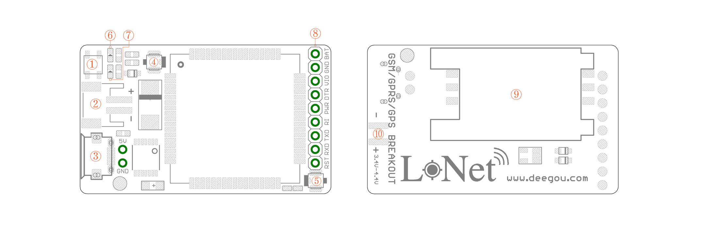
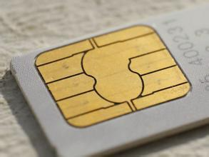
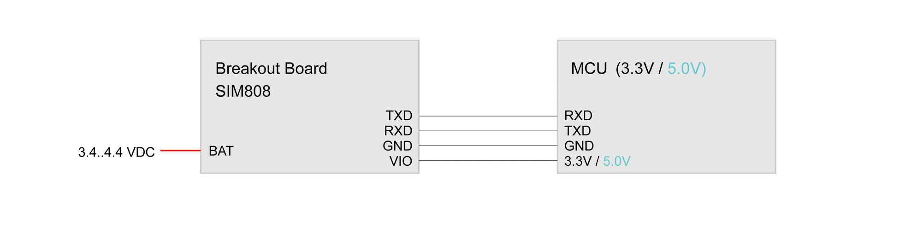
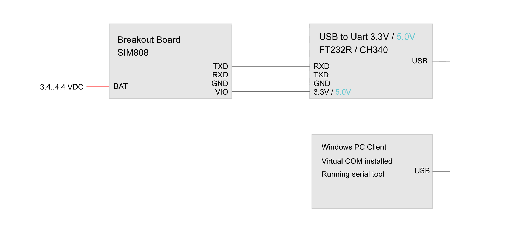

This board based on the latest SIMCOM SIM808 GSM/GPS module, it offers cellular GSM and GPRS data along with GPS technology for satellite navigation.
The board features ultra-low power consumption in sleep mode, giving the project incredibly long standby times. Furthermore there's an onboard battery charging circuit that can be used with LiPo batteries.
The GPS receiver is incredibly sensitive with 22 tracking and 66 acquisition channels, and also supports assisted-GPS (A-GPS) for indoor localisation. The board is controlled by AT command via UART and supports 3.3V and 5V logical level. It comes with a mini GPS and GSM antenna, however a battery is optional.
The board uses the 2G (not 3G or LTE) GSM networks.

① Power Button: this is the hard power switch for the module. When the module is power up, you can turn on or turn off the module by pressing the button for 2s.
② Li-ion Battery: this is power supply for the module, input voltage is from 3.4V to 4.4V. It uses the JST-2.0mm connector, that make it convenient to connect to 3.7V Li-Po Battery.
③ MicroUSB: the charging interface for Li-Ion battery, of input voltage range from 5V to 7V.
④ GSM Antenna: this is an uFL GSM antenna connector, just connect it to a GSM antenna for receiving GSM signal.
⑤ GPS Antenna: this is an uFL GPS antenna connector. You can connect either passive or active GPS antenna to it. Active GPS antenna runs at 2.8V voltage.
⑥ Net Indicator: Red LED, it will tell the what status is about the module linking to network.
⑦ Status Indicator: Green LED, it will tell whether the module is on, light when the module is running.
⑧ Breakout Pin: see Pin Definitions for more details.
⑨ SIM - Card Holder: SIM card holder for standard SIM card
⑩ Power Supply Pin: used for power soldering and testing.
| Name | I/O | Description | Note |
|---|---|---|---|
| BAT | I/0 | Power input / output | 3.4V - 4.4V DC |
| GND | I/0 | Power ground / logic ground | |
| VIO | I | Logic level reference | 2.8V - 5.0V DC |
| DTR | I | Sleep mode controlled pin | Pull high for sleep mode |
| PWR | O | Power switch | Active low in 2s |
| RI | O | Event/ message pin | |
| TXD | O | Transmit data | UART output from SIM808 |
| RXD | I | Receive data | UART Input to SIM808 |
| RST | I | Reset pin | Active low |
| Indicator LEDs | Status | Behavior |
|---|---|---|
| Operating Status (Green) | Off | SIM808 is not running |
| On | SIM808 is running | |
| Network Status (Red) | Off | SIM808 is not running |
| 64ms on/ 800ms Off | SIM808 not registered to the network | |
| 64ms On/ 3000ms Off | SIM808 registered to the network | |
| 64ms On/ 300ms Off | PPP GPRS communication is established |
Besides the antenna, you may need the following accessories using with LoNet 808.
|  SIM-Card
for GSM/GPRS Communication |
3.7V Li-ion Battery
for power supply |
DC/DC Voltage Regulator
for power supply |
| MicroUSB Cable
for charging battery |
USB to UART Tool
for testing ATcommand on PC |
Solder Panel
for charging battery |


The module is controlled by AT command via serial port, here we use Arduino as USB to serial tool. Upload the following code to Arduino and open the serial monitor. If you use other USB to serial tools, you can use AT Command Tester or SSCOM32 to test AT commands.
// this sketch is used for testing LoNet with Arduino
// Connect VIO to +5V
// Connect GND to Ground
// Connect RX (data into SIM808) to Digital 11
// Connect TX (data out from SIM808) to Digital 10
#include <SoftwareSerial.h>
SoftwareSerial mySerial(10, 11); // RX, TX
void setup()
{
// Open serial communications and wait for port to open:
Serial.begin(9600);
mySerial.begin(9600);
}
void loop() // run over and over
{
if (mySerial.available())
Serial.write(mySerial.read());
if (Serial.available())
{
while(Serial.available())
{
mySerial.write(Serial.read());
}
mySerial.println();
}
}
It is recommended to execute this process when first time to use the module. In the Serial Monitor columns of following tables, input of AT commands are in back, module returns values are in orange.
| Serial Monitor | Description |
|---|---|
| AT OK |
Send command “AT” to synchronize baud rate. Serial port of module is by default set at auto-baud mode, and in this mode, it will not output any indications when the module is on. |
| AT+IPR=9600 OK |
Set baud rate at 9600bps, supports baud rate from 1200bps to 115200bps. |
| AT+ECHARGE=1 OK |
Send command “AT+ECHARGE=1” to enable battery charging function. By default the charging function is closed. |
| AT&W OK |
Save parameter setting. |
| AT+CPOWD=1 NORMAL POWER DOWN |
Power down the module. |
| RDY +CFUN: 1 GPS Ready +CPIN: READY Call Ready SMS Ready |
Turn on the module again by the power button, it will response status about GPS and GSM. |
| AT+CBC +CBC: 1,96,4175 OK |
Inquire charging status and remaining battery capacity. |
| AT+CSQ +CSQ: 14,0 OK |
Inquire GSM signal quality. |
| Serial Monitor | Description |
|---|---|
| AT+CGPSPWR=1 OK |
Open GPS |
| AT+CGPSSTATUS? +CGPSSTATUS: Location Not Fix OK |
Read GPS fix status, “Location Not Fix” means that positioning is not successful. For the first time to start, it will take at least 30s. GPS must be tested by the window or outdoor. |
| AT+CGPSSTATUS? +CGPSSTATUS: Location 3D Fix OK |
GPS has fixed with 3D status. |
| AT+CGPSINF=0 +CGPSINF: 0,2234.931817,11357.122485, 92.461185,20141031041141.000, 88,12,0.000000,0.000000 |
Get the current GPS location information. Parameters formate: <mode>, <altitude>, <longitude>, <UTC time>, <TTFF>, <num>, <speed>, <course> |
| AT+CGPSOUT=32 OK $GPRMC,043326.000,A, 2234.9414,N,11357.1187,E, 0.000,143.69,311014,,,A*50 |
Read NMEA $GPRMC data, of which, “2234.9414 N, 11357.1187 E” is the location coordinates. For more details about NMEA sentences, check this site. |
| AT+CGPSRST=0 OK |
Reset GPS in Cold Start Mode. |
| AT+CGPSRST=1 OK |
Reset GPS in Hot Start Mode. |
| AT+CGPSPWR=0 OK |
Close GPS. |
Any tech support, please contact deray@deegou.com
Please contact info@deegou.com
Copyright (c) 2008-2016 Seeed Development Limited (www.seeedstudio.com / www.seeed.cc)